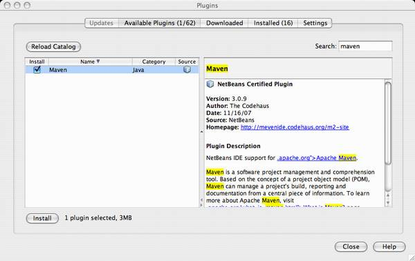
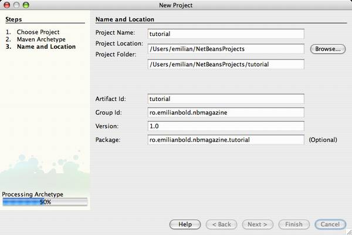
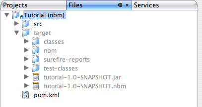
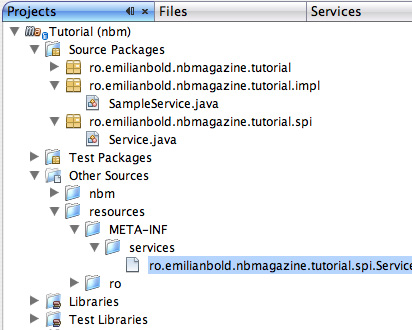
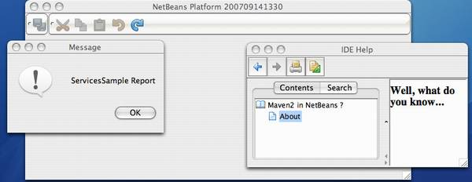
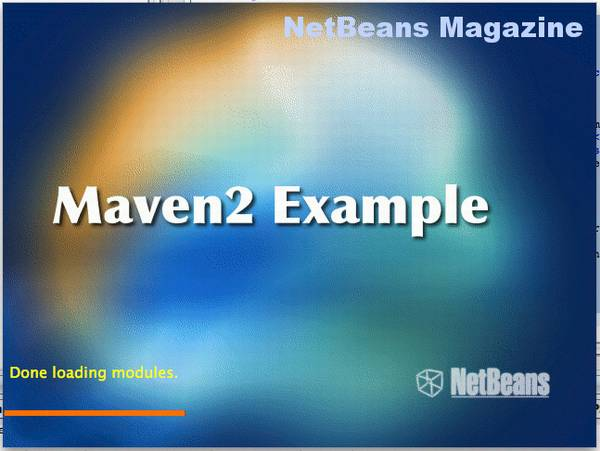
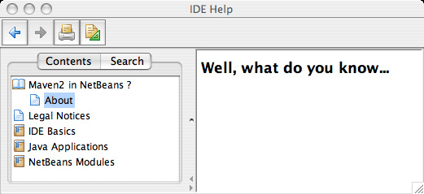

Apache Maven, you all know, is widely used as a build system and for many other activities. A great thing about Maven is that its “build script” is actually no script at all but a completely declarative configuration file called a POM (Project Object Model). Maven’s design will look familiar to NetBeans Platform developers: it’s basically constructed from a core “platform” supporting versioned plugins that can be automatically downloaded from a central repository.
This article will show that NetBeans is starting to have excellent Maven support, and how to use this as an alternative to the IDE’s built-in Ant integration – for every aspect of NetBeans Platform development. We start from simple issues like dependency declaration and go all the way to the building of module suites, branding, and help module construction.
Meet Mevenide
NetBeans does not yet support Maven 2 projects out of the box. Luckily though, we have Mevenide, a certified NetBeans plugin that provides extensive Maven integration. You can use existing Maven projects directly from the IDE as Mevenide provides execution and debugging support, auto-completion for many Maven-specific files, and more. All projects created with Mevenide will be standard Maven 2 projects that can also be built with the command-line mvn command.
But if your projects will be standard Maven 2 projects, there’s nothing actually forcing you to use the NetBeans IDE; so what’s to gain as a Platform developer? Well, by standardizing on Maven, members of your team could use different IDEs or even plain text editors to do the development. In particular, you can build NetBeans Platform applications with whatever tools you prefer.
The downside to using Mevenide and Maven 2 projects is that, while you do get independence from the IDE and an arguably better build system than Ant, you lose some IDE integration. For example, some of the wizards are gone regardless of the project type. For Platform development in particular, you’ll have to hand-edit some of the properties or XML files (the layer.xml file being the prime candidate). In some cases the loss of integration is partial; for example, the form editor will work but you won’t be able to edit the layer using drag and drop.
All that said, keep an eye on the update center as the missing wizards are slowly coming to Maven-based projects.
Mevenide can be easily installed by selecting Tools|Plugin, choosing “Maven” from the list of plugins (see Figure 1), and going through the normal installation steps.

Figure 1. The Plugins window after manual selection
{kind=link}
The first module
Let’s start creating a Maven-based NetBeans module. The first steps are the same for any Maven project: select File>New Project, open the Maven category and choose Maven Project. We’ll use the Quickstart Archetype (see Figure 2) for this module.

Figure 2. Selecting a Maven Archetype
An Archetype is basically a project generator in the Maven world. It produces the initial folder layout and the files to build upon.
In the final step, we define the Group Id, Artifact Id, and Version, as well as the project name (see Figure 3). These pieces of information together identify each artifact generated and manipulated by Maven (including the project itself), and will go into the project’s POM. The Group Id is basically a namespace – it’s common practice to use company, domain or application names here. The Artifact Id is the name for this particular module. The Version is used for example for configuration management.

Figure 3. Artifact id, Group id and Version definition
{kind=link}
As a result, we have a new project in NetBeans, shown as “tutorial (jar)”. You will also notice a package under the Source Packages node and another under Test Packages (see Figure 4). Additionally, you’ll have a simple example class and a test, JUnit as a test library (a dependency), and the pom.xml file under Project Files.

Figure 4. New Maven project, with errors that will be solved with the first build
The first strange thing you’ll notice if you’ve never used Maven before is that the project seems to have some errors. The reason in this case is that Maven doesn’t come by default with JUnit. JUnit is treated like any other dependency and will need to be downloaded from a repository. Maven takes care of this and any all other dependencies the first time you build the project. It will download the needed artifacts and cache them locally
(the default repository being repo1.maven.org).
The POM
Let’s now open the Project Files/pom.xml file, through which you can control all aspects of the project. Changes in the POM will be reflected in the project in the IDE. For example, by changing the <name/> element and saving the file, you’ll notice that the name of the project changes.
Next we need to change the <packaging/> element (whose value is shown in parentheses to the right of the project name). That’s because, of course, a NetBeans module isn’t distributed as a simple JAR file but as a NBM. So change the packaging to nbm and try to build the project. You’ll see that it fails miserably. The reason is that no default Maven plugin knows how to handle the nbm packaging. We need to add the nbm-maven-plugin (which I’ll call “NBM Plugin” from now on) inside the <build/> element in the POM. See Listing 1.
| Listing 1. Build configuration for the NBM Plugin |
|
Now the project will build successfully. After the build, switch to the Files tab and you’ll notice in the target folder all the extra artifacts, including the generated NBM file (see Figure 5). At this point we have a working module project; by clicking Run you’ll get a new IDE running, which should include our module among many others.

Figure 5. NBM artifact in target folder
You might get errors related to Windows paths while trying to run the project. Make sure you don’t have spaces in these paths, as these are usually the culprits.
Adding an Action
We will now create a new Platform Action using the New Action wizard. The purpose of this Action will be just to inspect that a given service exists and show a dialog. The wizard automatically generates the Bundle.properties file in the proper Maven-friendly folder, as well as the Action class. It also changes the layer file and adds the corresponding dependency to the POM.
At this point, any build using Platform APIs will fail, as the Maven project doesn’t have a dependency on the needed Platform-specific artifacts. First we need to declare the repository where the NetBeans artifacts are located; see Listing 2. Next we include a dependency on org-openide-util, which is the module providing the Platform’s Actions API. See Listing 3. This is equivalent to a dependency added to a normal Platform module. The NBM Plugin will detect that this artifact is a module and configure the proper dependency in the generated build artifact. As before, the project won’t initially compile without the dependency; this will be resolved when the files are downloaded on the first build.
| Listing 2. Declaring a default repository for NetBeans artifacts |
|
| Listing 3. Adding openide-util as a dependency |
|
Regarding Listing 3, if the version RELEASE60 doesn’t work for you, try RELEASE60-BETA2 as the new bits might not yet have reached the Maven repository when you read this.
Now right click on the project node and create an Action with default options. Upon building the project, you might get a warning about Java sources being 1.4 due to some @Override annotations which are 1.5 specific. You can just delete the annotations.
All the basic Platform modules have the groupId org.netbeans.api and the JAR name as the artifactId. If you don’t know the groupId/artifactId for a module, you can try finding it in the repository at http://deadlock.netbeans.org/maven2.
Other NetBeans Platform specific settings
So far our module does little to interact with the NetBeans Platform. Sure, by adding a dependency on org-openide-util we can already use the lookup service for example, but we can’t yet declare a service in the global lookup.
The standard NetBeans way in this case is to place a text file under META-INF/services. Luckily this is almost the same under Maven, with a twist: while the Java source files sit under src/main/java, all resources must be under src/main/resources.
This Maven-specific separation of resource files from Java source files means extra work if you plan to migrate an existing project to Maven. You’ll have to write a script that splits the files that were together in the older project (or do it by hand).
The resources folder may be created outside the IDE, or inside it from the Files tab (under src/main). It will also be automatically created by the Actions wizard. After this, you should see another node in the Projects window called Other Sources, containing your resource files (see Figure 6).

Figure 6. Other Sources node
The resources folder only holds resources that belong to the artifact. It does not contain for example the POM file or other Maven configuration files.
The contents and name of the file under META-INF/services are the same as usual. Respectively: the service base class or interface; and the fully qualified name of the implementing classes, each in its own line.
The layer file
Now, in order to have menu items or toolbars we need a layer file. The necessary configuration task is letting the build plugin know which is your layer file. In order to do this, you need to create a plugin configuration file (an NBM descriptor), which defines the module metadata you’d expect: cluster name, module type, update center URL, codebase, manifest, etc.
First, create the src/main/nbm folder. This is where you’ll put the descriptor as a special configuration file (and not in the resources folder). In the new folder, create a file called module.xml with contents similar to Listing 4.
| Listing 4. NBM Plugin descriptor file: module.xml |
|
The NBM descriptor is capable of holding a lot more data. Please see the NBM Plugin documentation for the full schema.
Next we have to edit the manifest file and declare the layer in the OpenIDE-Module-Layer section. While the NBM Plugin lets you declare some module metadata, it currently supports only the manifest file but not the layer. Thus, the src/main/nbm/MANIFEST.MF file defined in module.xml should be created with this line content (in a single line):
OpenIDE-Module-Layer:
ro/emilianbold/nbmagazine/tutorial/layer.xml
We know that anything that isn’t a Java source class must be placed in the resources folder; the layer file is no exception as it will also be part of the final build artifact. Now it’s time to rebuild and re-run the project. You’ll be happy to notice that the layer is properly registered, that our Action is working, and also that we can declare services in META-INF/services.
With the configuration done so far, the manifest, layer and NBM descriptor files, plus some dependencies, we have covered about 90% of the Platform development cases. Next we’ll talk about JavaHelp modules, branding and suites, which should bring us to 100%.
Help modules
The NetBeans Platform has excellent JavaHelp support via NetBean’s standard build harness; the NBM Plugin also supports building modules with JavaHelp documentation.
First, you’ll need a new empty Maven project configured like the previous one (but without the Action), containing a NBM descriptor and an empty layer file. I’ll assume “ro.emilianbold.nbmagazine.tutorial” as groupId and “help” as artifactId. Also, the layer must declare the reference to the JavaHelp docs (see Listing 5).
| Listing 5. layer.xml |
|
The helpset.xml file (see Listing 6) just contains a reference to the location of the helpset configuration. The reason for doing this is that the documentation won’t actually be in the main JAR artifact but in a separate JAR (the kind of JAR you see in the docs folder in the cluster).
| Listing 6. helpset.xml |
|
Now we get to the actual JavaHelp files. First we need to create a new folder: src/main/javahelp/${groupId}/${artifactId}/docs (with our groupId/artifactId, that would be src/main/javahelp/ro/emilianbold/nbmagazine/tutorial/help/docs.) Then create the various JavaHelp files (see Listing 7). Compile and run the project, and you’ll see that the help works (see Figure 7).
| Listing 7. JavaHelp files |
|

Figure 7. Our help content registered in the main Platform help
{kind=link}
OK, remember you shouldn’t copy-and-paste? This is exactly what I did to bootstrap this module and get the JavaHelp files. After you obtain the base files, you just need to add the new HTML files and entries to the map.
Library wrappers
So far we’ve seen how to declare a normal module and add dependencies. However, a module may also “wrap” an existing JAR and export part or all of its packages. Let’s see how to do this.
Adding a dependency to a third-party JAR can be done the normal Maven 2 way (see Listing 8). You just need to remember to have a repository declared in the POM if the JAR is not in the standard repository.
| Listing 8. A non-NBM (plain JAR) dependency |
|
The NBM Plugin will automatically add the JAR to the NBM, but there will be no public packages so far, so it can only be used internally. Sadly, the public packages will have to be manually added to the manifest (see Listing 9), which is quite painful but should be a one-time job.
| Listing 9. MANIFEST.MF for holding the public packages |
|
Remember that the manifest file is quite finicky with line lengths, so you might need to break it into multiple lines (each one starting with a single space).
Normally leaving an empty OpenIDE-Module-Public-Packages means that all packages will be public. Note that though this is good for normal modules, it won’t work for library wrappers.
The module suite
We’ve already seen how to create individual modules, module wrappers and documentation modules, but we still need to put them somehow in a suite. The solution is to rely on Maven again and use an aggregating project. This must have the POM packaging and list each of the contained sub-modules (see Listing 10).
| Listing 10. Aggregating project |
<project ...> |
While the NBM Plugin is able to generate the whole suite cluster with the cluster goal, you still have to configure it to run during the build project (see Listing 11). Note that the <module/> elements point to the actual disk folders, as opposed to the normal way of using groupId:artifactId:version for dependencies.
| Listing 11. NBM Plugin configuration |
|
In the configuration file in Listing 11, I first register the NBM Plugin as a build plugin extension. Then I define the enabled clusters, as well as the brandingToken (needed for branding) and keystorealias. All this information is used by the cluster goal, which is responsible for generating the Platform-compatible cluster. Next, with the <execution/> element, I register the plugin to run during the build and execute the cluster goal.
This way, the plugin will run each time I build the aggregating project and generate the proper cluster. You can run the application now and notice that it’s quite simple (it only uses the Platform cluster), has the help working, and even our little Action which uses the Lookup service works (see Figure 8).

Figure 8. Module suite with Help
{kind=link}
Branding
The last piece of the puzzle is branding. Support via actual wizards is totally missing to this date, so it’s back to manual work or copy-pasting from another project. You’ll need a src/main/nbm-branding folder where all the branding sources will reside. The folder’s structure should be the same as the one used by the Ant-based build harness. Also, the POM must be changed to configure the nbm:branding goal as in Listing 12. The end result is a branded application as seen in Figure 9.
| Listing 12. Running the branding goal in the process-resources phase |
|

Figure 9. The branded splash screen
Conclusions
Using Maven to build NetBeans Platform applications is no longer an obscure task. The current integration makes Maven-based projects almost on par with standard IDE projects and the gap is narrowing. So, if you like Maven but couldn’t use it before with NetBeans IDE, or you do NetBeans Platform development but can’t use the IDE for some reason, rest assured that there’s a good and rapidly improving solution now.